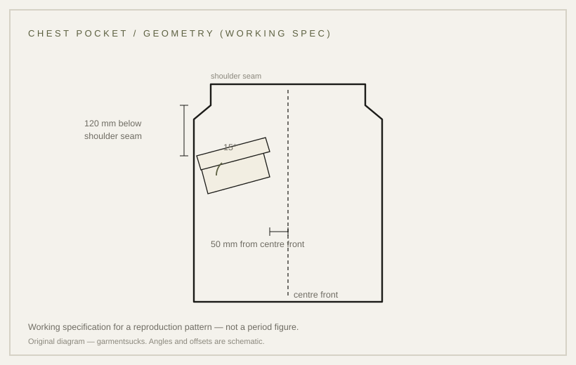

details · 1942
The slanted chest pocket: a shape without a documented reason
The shape is real on surviving garments; the reason behind it is not documented.
unresolved Published 2026-11-13 · last checked 2026-11-13

1. Summary
The chest pocket of the tropical jacket is cut at an inward slant, and that slant can be observed on surviving garments.
The institutional records found so far describe slanted chest pockets on a USMC airborne HBT variant, not on the M-1942; the functional explanation usually quoted comes from marketplace listings. Confidence: unresolved.
2. What this is
A slant pocket: a patch pocket whose mouth is not horizontal, usually covered by a flap (a buttoned cover) across the opening. On tropical garments the pocket sits on the chest and is sewn at an angle toward the centre front. Other terms used here: mouth (the opening the hand enters), flap (the buttoned cover), bartack (a dense stitch at a stress point).
3. Origin and context
The slant is associated with the M-1942, the Second World War parachutist jacket. Marketplace listings say it let the opposite hand reach the pocket while the wearer was in a parachute harness and equipment belt — a claim not found in any specification document.
The link to the 1963 tropical uniform is stronger: an IWM catalogue description states that the Tropical Combat Uniform was introduced in June 1963 by the Quartermaster Research and Engineering Command and was based closely on the design of the M-1942 Parachutist Uniform. That description does not mention the slant. An untested possibility: the angle may be a pattern adaptation from the parachutist jacket rather than a separate functional decision. No document distinguishes the two.
4. How it works
Mechanically, an angled mouth follows the diagonal sweep of the hand rather than a straight drop. A second possibility: a mouth that turns upward and toward the centre makes contents less likely to spill when the wearer bends or lies prone.
Both are inferences from shape, not statements from a document. No field evaluation of an angled chest pocket was found; the closest source found was an evaluation of trouser pockets, which does not discuss chest pockets.
5. Construction
The pocket is cut as a patch with a diagonal mouth, covered by a buttoned flap and sewn to the front panel. Work order: mark the pocket line on the panel, sew the pocket, attach the flap, bartack the mouth ends, then attach the button.
Mouth width and pocket depth affect how easily the hand enters, and the flap adds a layer at the mouth that has to be lifted before the hand reaches the contents. This work order is inferred from garment construction; no document states it.
6. Variants across eras
| Variant | Year/origin | Difference | Source status |
|---|---|---|---|
| M-1942 jump jacket | 1942, US | reported to have slanted chest pockets | unverified institutionally |
| Tropical Combat Uniform | 1963, US | flap with button; catalogue does not mention the slant | IWM description |
| HBT airborne USMC variant (P1944) | 1944, US | slanted chest pockets with flaps | verified (IWM 30100972) |
| Modern reproduction | present | often a level pocket | market observation |
Competing accounts
The T1 records prove that slanted chest pockets existed on a USMC airborne garment, not that the M-1942 had them. The M-1942 claim and the harness explanation rest on T3 descriptions. A dated specification or a documented M-1942 example would settle it; the evidence currently favours the feature's existence in airborne clothing, not its specific attribution.
| Account | Source (tier) | What it claims | Evidence offered | Weak point |
|---|---|---|---|---|
| Marketplace / dealer descriptions | T3 | The M-1942 had slanted chest pockets so the opposite hand could reach them under a harness | product and dealer descriptions | no specification; commerce context |
| IWM 30100972 | T1 | A USMC airborne HBT variant has slanted chest pockets with flaps | object record | different garment; does not describe the M-1942 |
| IWM TCU records | T1 | Tropical garments have pocket flaps and buttons; no mention of a slant | object records | silent on the slant |
7. Telling an original from a reproduction
Look for the mouth angle, the flap covering it and a bartack at the mouth end. A level pocket, a shallow flap and no bartack indicate a reproduction.
Look at the hem: a channel with a cord; on the thigh, a cargo pocket with a pleat and bartacks; on the label, stock numbers 8405-782-29xx. No drawcord and light cloth means a reproduction.
Measure the pocket mouth against the horizontal and compare it with period photographs. Note the direction of the bartack as well: on a slanted pocket it usually sits at the lower end of the mouth, where stress gathers when the hand enters.
On an original the flap covers the mouth and the bartack is visible at the mouth end; on a cheap reproduction the pocket is level, the flap is shallow, and the bartack is missing.
8. Common mistakes and myths
Myth one: the angle figures in circulation are period figures. No document giving them was found. Myth two: the parachute-harness explanation is treated as fact; its source is marketplace listings. Mistake three: ignoring the flap when comparing pockets.
9. How to read it in wear
Try putting a hand into the pocket with the jacket buttoned: the slant changes the entry angle and feels different when the jacket is worn with a shoulder bag or a harness. With the jacket open, the angle also changes how the pocket reads from the front — the pocket line points to the centre rather than down.
10. Modern designer trail
Designers who rework military jackets often keep pocket geometry as a sign of origin, then change the proportion. The designers cards on this site show that pattern; no direct-influence claim is made here.
11. Specification
The left column is empty because no figure is recorded in a source. The right column is a reproduction working sheet.
| Recorded in sources | Reproduction suggestion |
|---|---|
| not found | 15° from horizontal, working tolerance ±1° |
| not found | 120 mm below the shoulder seam |
| not found | 50 mm from the centre front |
12. Questions and exercises
1) What angle does the pocket on a jacket you own make, and against which line are you measuring it? 2) Is there a source for that figure, or only a blog and a shop? 3) Why does this card stay unresolved when the shape can be seen?

Glossary
- Slant pocket
- Pocket whose mouth is not horizontal.
- Flap
- Buttoned cover over the pocket mouth.
- Bartack
- Dense stitch bar at a stress point.
- Harness
- Body rig for a parachute or equipment.
Sources
- [S1] [T1] IWM 30150059 — Trousers, Combat, Tropical (Type III), description of the 1963 TCU
- [S2] [T1] IWM 30096162 — Trousers, Combat, Tropical (Type III ERDL), UNI 4198, 1969
- [S3] [T1] IWM 30100972 — Jacket, Utility, HBT P1944 USMC: slanted chest pockets with flaps
- [S4] [T1] Smithsonian NMAH 1990.0221.01 — Model 1942, Jacket; Army; Airborne
- [S5] [T3] IMA-USA — M-1942 jump jacket (four expandable cargo pockets)
- [S6] [T3] Timechine — Para-42 Jump Jacket (slanted pockets)
- [S7] [T4] Traces de guerre — La mythique M-1942 Jump Jacket
- [S8] [T2] NLM — evaluation of trouser pockets (inference context)
Claims & sources
| Claim | Source | Tier | URL | Status |
|---|---|---|---|---|
| TCU introduced June 1963 by the QM R&E Command, based closely on the M-1942 Parachutist Uniform | IWM 30150059 (catalogue description) | T1 | link | verified (institutional) |
| The M-1942 has slanted chest pockets | Timechine; IMA; HuntingGunSupply | T3 | link | contested |
| Reason: hand access under a parachute harness | Dealer description | T3 | link | unverified |
| The USMC airborne HBT variant has slanted chest pockets with flaps | IWM 30100972 | T1 | link | verified (institutional, different garment) |
| The figures 15° / 120 mm / 50 mm | Site reproduction working sheet | — | not found in any document | |
| The slant survived on every pattern | — | — | unverified |